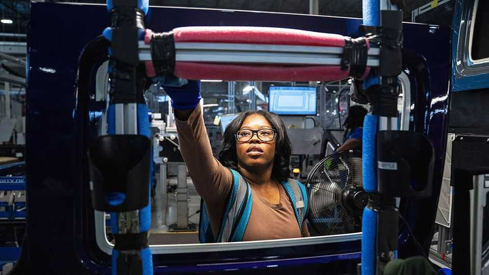

Where Canada can hurt America most
Its tariff retaliation is calibrated for maximum political pressure

Sep 3rd 2026
THE THEORY behind Donald Trump’s trade war with Canada is simple: America holds all the cards. “WE DON’T NEED CANADA, THEY NEED US,” Mr Trump wrote on social media on August 24th. A week later Scott Bessent, America’s treasury secretary, was similarly dismissive of Canada’s retaliation. “I don’t think you can be in a tit-for-tat with someone who’s 13 times larger than you are.”
But that understates America’s exposure to one of its biggest commercial partners. The two countries traded more than $870bn in goods and services last year. Canada buys roughly 15% of all American goods exports and is the top export destination for 34 states. In carmaking, parts can criss-cross the border several times before a vehicle is finished. For America as a whole, the stakes of the trade war may look small. But for particular industries and states, they are anything but.
Canada is deliberately trying to turn those commercial ties into political pressure. Its response to America’s 50% tariffs on $20bn-worth of Canadian exports is a package of levies of 15-50% on $20bn-worth of American goods, due to take effect on September 8th. Steel and aluminium products are among those facing the heaviest tariffs, alongside cheese and agricultural equipment. Cars will continue to face existing Canadian counter-tariffs. “We are picking products that will target states,” said Mélanie Joly, Canada’s industry minister, on August 25th.
Canada’s strategy is clearest in the Midwest. Michigan, Ohio and Iowa all host crucial Senate races—and all will feel the pain. New 50% levies on steel and aluminium products will hit Michigan’s manufacturers, while the wider trade war weighs on the car industry. In Iowa, duties on agricultural equipment will hurt John Deere and other manufacturers. Ohio, meanwhile, sends nearly a third of its goods exports to Canada, making it particularly vulnerable.
Canada dropped seafood from its retaliatory list, sparing the lobster industry, but much of Maine’s trade remains closely intertwined with its northern neighbour. Lumber and paper products, among other things, routinely cross the border for processing. Susan Collins, the Republican senator facing a difficult re-election campaign, has called America’s tariffs “a mistake”. Farther south, 50% tariffs on furniture will hammer North Carolina, where another open Senate seat is in play.
Canada’s retaliation is not the only threat to Republicans. Mr Trump’s own tariffs will push up prices in America. The latest measures cover everything from toys to metals and other industrial inputs, raising the cost of both imported goods and American-made products. That is politically dangerous when affordability dominates voters’ concerns. Only 26% of Americans back Mr Trump’s tariffs on Canada.
Some Republicans are sounding the alarm. On August 24th Thom Tillis, the retiring Republican senator from North Carolina, warned that the trade spat was creating “tension” in border states. “The party that owns that tension”, he said, “is the party that probably suffers the consequences in November.” Others reject Mr Trump’s portrayal of Canada as an economic adversary. “This is not China,” said Ms Collins two days later. “It’s Canada, our best friend, a country with whom our economy is completely intertwined.”
The costs could yet grow. Jamieson Greer, America’s trade representative, has suggested outright bans on some Canadian goods. In Canada, other moves are being discussed, such as curbs on oil and critical-mineral exports. Mark Carney, the prime minister, says he is responding to an attack. Mr Bessent may be right that America has far more firepower. That does not mean it will escape injury. ■
Stay on top of American politics with The US in brief, our daily newsletter with fast analysis of the most important political news, and Checks and Balance, a weekly note that examines the state of American democracy and the issues that matter to voters.